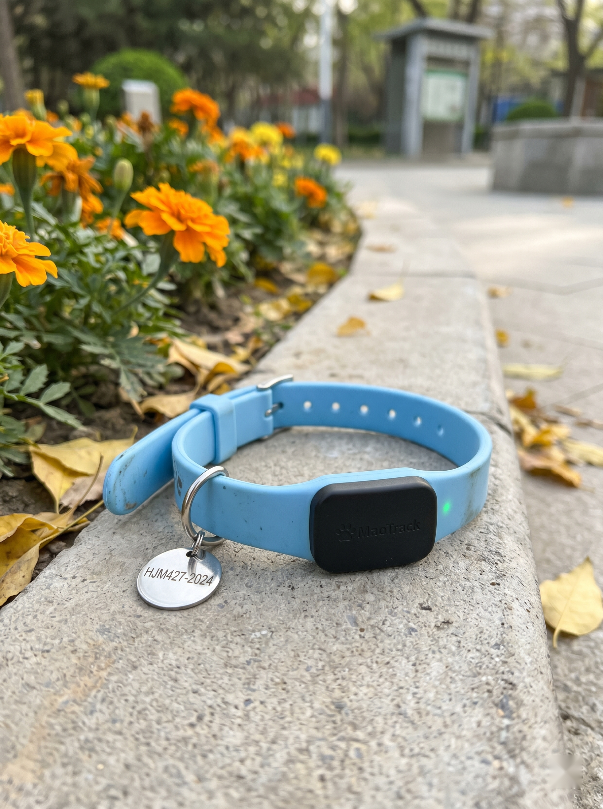

— 群消息 16:02 —
🌿
朝阳铲屎
我中午刚路过朝阳公园南门 在花坛边捡到一个 MaoTrack 的项圈牌 上面摔了一下 还能开机
看牌号是 HJM427-2024 别是哈基米的吧😱

🐾
朝阳铲屎
已经把照片发去 MaoTrack 客服 让主人自己来认
🌃
city不city
啊 那地方我熟 上周还在那看到 @朝阳救助小柚 在拍 vlog 救一只橘 离这花坛就 5 米远
😩
班味儿过重
嗯？小柚那边好像就是专门朝阳公园南门那一片 顺嘴提一句
⚖️
我宣布橘猫无罪
先别脑补 等失主认领
— 已显示全部匹配 —